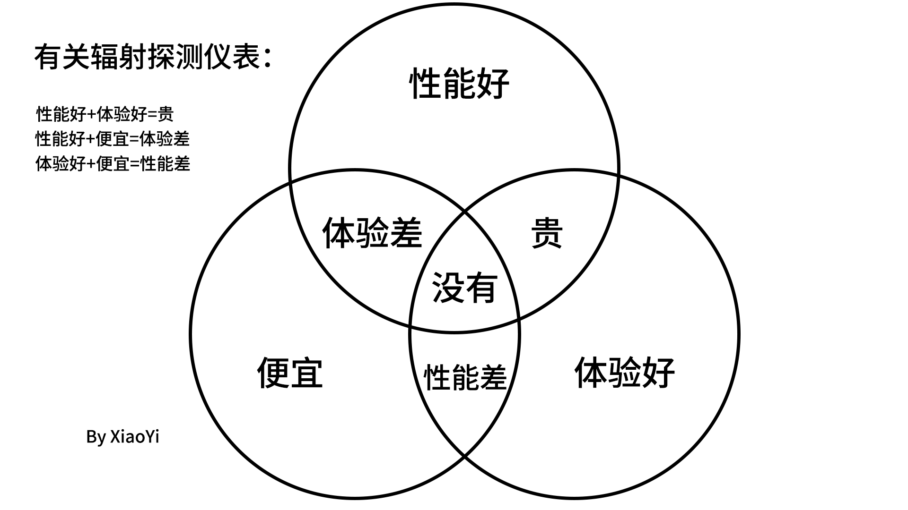

测量与仪器/仪器类型与清单
辐射仪器列表
有关辐射测量仪器类型的说明， 请参阅辐射测量仪器的类型
有关能量补偿请看这里
价格基本上均以美元表示，如果是仅限国内销售的价格均以人民币表示，不包含运费。
辐射测量仪器基本上遵守这张图：

至于国内授权经销商的销售，有的没那么贵，有的贵一倍左右。
如果是授权代理，可以期待支持和其他服务，所以不能简单地与从国外购买相比。
另外，一些商店只是销售产品，而一些商店则提供良好的支持。
购买时，建议检查支持情况、是否有中文手册、保修和维修支持。
即使使用相当昂贵的型号，我们也听说也会出现问题，例如显示的剂量率明显错误。
我听过多个制造商的产品有这样的事，所以我不认为能够依赖制造商的产品有多少安全感。
在哪里买，有以下信息。
闲鱼存在一些欺诈行为。
淘宝似乎很安全，如果在旗舰店/官方店买的话
如果你在eBay上用PayPal付款，似乎出现问题可以得到退款。但跨国处理事务很麻烦、
- 使用情况根据以下标准进行评估。
环境剂量：✓带能量补偿，×无能量补偿，∆其他
累积剂量：✓带能量补偿，×无能量补偿/无功能，∆其他 表面污染：✓饼型云母端窗盖革管，×其他类型盖革管，∆普通端窗管 食物：✓饼型云母端窗盖革管，×其他类型盖革管，∆普通端窗管 核素分析：✓可进行核素分析，×不可进行核素分析，∆需要连接PC *一部分设备是否存在能量补偿是推测的。 *食物类别中，评估标准为由于端窗管可检测低于国标GB 14882-94要求的核素的辐射水平 型号名称处打*为表示此设备为可批量生产的DIY级产品 - 推荐指数为我的主观评价，推荐指数满分为☆☆☆☆☆
- 如需查找请使用Ctrl+F输入你想查找的品牌或型号
| 机型 | 传感器 | 可检测射线 | 使用目的 | Log | 能量补偿 | 可更换电池 | 报警情况 | 推荐指数 | 价格 | ||
|---|---|---|---|---|---|---|---|---|---|---|---|
| IMI Inspector Alert™ V2 | GM管 | α射线：✓ β射线：✓ γ射线：✓中子射线：× |
环境剂量：× 累积剂量：× 表面污染：✓食物：✓核素分析：× |
∆ 3.5 毫米输出线是选配的单主机无法查看Log |
∆ 硬补配件是选配的 |
✓ 一节 AA 碱性电池 （某些型号为 9 伏碱性电池） |
可以打开/关闭声音 | ☆☆☆ | $ 825.00 购买地址 |
||
| Radalert® 100X | GM管 | α射线：✓ β射线：✓ γ射线：✓中子射线：× |
环境剂量：× 累积剂量：× 表面污染：∆食物：∆核素分析：× |
∆ 3.5 毫米输出线是选配的单主机无法查看Log |
× | ✓ 一节 AA 碱性电池 （某些型号为 9 伏碱性电池） |
可以打开/关闭声音 | ☆☆☆ | $ 630.00 购买地址 |
||
| RadEye™ B20/B20-ER | GM管 | α射线：✓ β射线：✓ γ射线：✓0.017–3MeV中子射线：× |
环境剂量：✓ 累积剂量：✓ 表面污染：✓食物：✓核素分析：× |
✓ | ✓ | ✓ 使用两节 AAA 电池 |
可以打开/关闭声音 画面 | ☆☆☆☆☆ 政府机构专用, 除了贵几乎没有可以令人吐槽的点 |
$2070.00/$2,470.00 购买地址 |
||
| Ludlum Model 2401系列 | GM管 | α射线：✓ β射线：✓ γ射线：✓中子射线：× |
环境剂量：✓ 累积剂量：✓ 表面污染：✓食物：✓核素分析：✓ |
× 不支持 |
✓ | ✓ | 可以打开/关闭声音 | ☆☆☆ 通过更换探头可实现多用途 |
请去官网获取报价 购买地址 |
||
| ECOTEST TERRA/+ | GM管 | α射线：× β射线：✓ 0.5-3 MeVγ射线：✓0.05-3 MeV中子射线：× |
环境剂量：✓ 累积剂量：✓ 表面污染：×食物：×核素分析：× |
∆ Mode of PC connection via Bluetooth |
✓ | ✓ 两节1.5V电池 |
可以打开/关闭声音 画面 | ☆☆☆☆ | - 购买地址 |
||
| GAMMA-SCOUT | GM管 | α射线：✓ β射线：✓ γ射线：✓中子射线：× |
环境剂量：✓ 累积剂量：✓ 表面污染：∆食物：∆核素分析：× |
✓ | ✓ | × 最多只提供可充电的型号 |
可以打开/关闭声音 | ☆☆☆ | 基础版400€ 购买地址 |
||
| CEM DT-9501 | GM管 | α射线：✓ β射线：✓ 0.2MeV-γ射线：✓0.02MeV-中子射线：× |
环境剂量：✓ 累积剂量：✓ 表面污染：∆食物：∆核素分析：× |
✓ | ✓ | ✓ 四节1.5V AA电池 |
可以打开/关闭声音 画面 | ☆☆☆ | CNY￥3280.00 购买地址（京东） |
||
| BERTIN TECHNOLOGIES MINITRACE CSDF |
GM管 | α射线：✓ β射线：✓ γ射线：✓0.042-3MeV中子射线：× |
环境剂量：✓ 累积剂量：✓ 表面污染：✓食物：✓核素分析：× |
✓ | ✓ | ✓ 两节1.5V AA电池 |
可以打开/关闭声音 | ☆☆☆☆☆ 备注：可选IP67+传输 距离长达 20 公里的无线电版本 |
- 购买地址 |
||
| Mazur Instruments PRM-7000 |
GM管 | α射线：× β射线：✓ 0.035MeV-γ射线：✓0.035MeV-中子射线：× |
环境剂量：× 累积剂量：✓ 表面污染：×食物：×核素分析：× |
✓ 输出线是选配的 |
× | ✓ 一节9V电池 |
可以打开/关闭声音 | ☆☆☆ | $349 购买地址 |
||
| Mazur Instruments PRM-8000 |
GM管 | α射线：✓ β射线：✓ γ射线：✓0.01MeV-中子射线：× |
环境剂量：× 累积剂量：✓ 表面污染：×食物：∆核素分析：× |
✓ 输出线是选配的 |
× | ✓ 一节9V电池 |
可以打开/关闭声音 | ☆☆☆ | $539 购买地址 |
||
| Mazur Instruments PRM-9000 |
GM管 | α射线：✓ β射线：✓ γ射线：✓0.01MeV-中子射线：× |
环境剂量：× 累积剂量：✓ 表面污染：✓食物：✓核素分析：× |
✓ 输出线是选配的 |
× | ✓ 一节9V电池 |
可以打开/关闭声音 | ☆☆☆ | $679 购买地址 |
||
| RadiationAlert Ranger EXP | GM管 | α射线：✓ β射线：✓ γ射线：✓0.01MeV-中子射线：× |
环境剂量：× 累积剂量：✓ 表面污染：✓食物：✓核素分析：× |
✓ | × | ✓ 二节AA电池 |
可以打开/关闭声音 不可关闭的红色LED闪烁 |
☆☆☆ | - 购买地址 |
||
| SEIMonitor 4 | GM管 | α射线：✓ β射线：✓ γ射线：✓0.01MeV-中子射线：× |
环境剂量：× 累积剂量：✓ 表面污染：∆食物：∆核素分析：× |
✓ | × | ✓ | 可以打开/关闭声音 | ☆☆☆ | - 购买地址 |
||
| Polimaster PM1610 X/A X | 能量补偿GM管 | α射线：× β射线：× γ射线：✓0.02-10.0MeV中子射线：× |
环境剂量：✓ 累积剂量：✓ 表面污染：×食物：×核素分析：× |
✓ 通过USB访问电脑软件 |
✓ | × 内置240mAh锂电池 |
尚未清楚是否可以打开/关闭 声音 画面 震动 |
☆☆☆☆ | - 购买地址 |
||
| RADEX RD1706 | GM管 | α射线：× β射线：✓ 0.25 – 3.5MeVγ射线：✓0.03-3MeV中子射线：× |
环境剂量：× 累积剂量：- 表面污染：×食物：×核素分析：× |
∆ 不支持 |
× | ✓ 二节AAA电池 |
可以打开/关闭声音 震动 | ☆☆☆ | $ 348.95 购买地址 |
||
| FNIRSI GC-01* | GM管 | α射线：× β射线：∆ γ射线：✓0.06-中子射线：× |
环境剂量：× 累积剂量：✓ 表面污染：×食物：×核素分析：× |
× 不支持 |
× | × 1100mAh 锂电池 |
可以打开/关闭声音 震动 LED闪烁 | ☆ | $ 44.6 购买地址 |
||
| 空霸 KB6011（Huahe）* | GM管 | α射线：× β射线：∆ γ射线：✓0.06-中子射线：× |
环境剂量：× 累积剂量：✓ 表面污染：×食物：×核素分析：× |
× 不支持 |
∆ 补偿措施为铝箔，可屏蔽低能β射线， 对低能γ射线几乎没有作用 |
× 1200mAh 锂电池 |
可以打开/关闭声音 画面 | ☆ | $ 60 | ||
| CESTSEN MR-50/EXP | GM管 | α射线：✓ β射线：✓ γ射线：✓0.02-3MeV中子射线：× |
环境剂量：× 累积剂量：× 表面污染：✓食物：✓核素分析：× |
× 不支持 |
∆ | ✓ 使用9V电池 厂商宣称在正常本底下可工作480小时 |
可以打开/关闭声音 LED闪光 | ☆☆☆ | $ 569 购买地址（淘宝） |
||
| 上海仁日REN500E | GM管 | α射线：× β射线：∆ 仅限硬βγ射线：✓0.05-1.5MeV中子射线：× |
环境剂量：× 累积剂量：✓ 表面污染：×食物：×核素分析：× |
× 不支持 |
× | ✓ 使用两节5号电池 |
可以打开/关闭声音 其他项未知 | ☆☆ | - | ||
| SMACH RG1000 | GM管 | α射线：× β射线：∆ 仅限硬βγ射线：✓0.048-3MeV中子射线：× |
环境剂量：∆ 累积剂量：✓ 表面污染：×食物：×核素分析：× |
✓ 仅在PC查看 |
∆ | ✓ 使用两节1.5V AAA电池 |
可以打开/关闭声音 | ☆☆ | $ 97.22 购买地址 |
| 机型 | 传感器 | 可检测射线 | 使用目的 | γ射线测量范围 | γ射线灵敏度（cpm/μSv/h） | 测量单位 中子射线除外 |
尺寸 重量 电池 工作时间 防水性能 |
报警情况 | PC连接 | 推荐指数 | 价格 |
|---|---|---|---|---|---|---|---|---|---|---|---|
| Teledyne FLIR identiFINDER R200G/GN GN支持中子射线 |
(18mm)^3 CsI 27mm x 62mm x 5mm ZnS (ZnS仅限GN) |
α射线：× β射线：× γ射线：✓0.025MeV-3MeV中子射线：✓ |
环境剂量：✓ 累积剂量：✓ 表面污染：×食物：×核素分析：✓≤7.5% |
0.1μSv/h ~ 250μSv/h | 210cps/μSv/h | nSv・μSv μRem・mRem CPS |
14.5 x 5.6 x 4.8 cm 0.4 kg 锂电池 36小时 IP67 |
- | ∆ 提供Android, iPhone |
☆☆☆☆ | - 购买地址 |
| Teledyne FLIR identiFINDER R300Z/ZH ZH支持中子射线 |
15 x 13 x 5 mm CdZnTe 15 x 54 mm He-3 (He-3仅限ZH) |
α射线：× β射线：× γ射线：✓0.03MeV-3MeV中子射线：✓ |
环境剂量：✓ 累积剂量：✓ 表面污染：×食物：×核素分析：✓≤3.5% |
0.1μSv/h ~ 10mSv/h | - | nSv・μSv・mSv μRem・mRem CPS |
3.3 x 7.0 x 12.5 cm 0.4 kg 锂电池 24 小时 IP67 |
- | ∆? | ☆☆☆☆ | - |
| Teledyne FLIR identiFINDER R400 NGH |
35 x 51 mm NaI 15 x 54 mm He-3 GM管 |
α射线：× β射线：× γ射线：✓0.02MeV-3MeV中子射线：✓ |
环境剂量：✓ 累积剂量：✓ 表面污染：×食物：∆？核素分析：✓≤8% |
GM：100 μSv/h ~ 10mSv/h 闪烁体：0 nSv/h - 500 μSv/h |
- | nSv・μSv・mSv μRem・mRem CPS |
9.4 x 26.9 x 8.1 cm 1.5 kg NiMH/4x AA 电池 8 小时 IP53 |
- | ∆ 选配 |
☆☆☆☆ | - |
| Teledyne FLIR identiFINDER R425 G/NG/LG/LNG NG/LNG支持中子射线 |
45 x 45 x 45 mm NaI(G&NG) 35 x 35 x 35 mm LaBr3(LG&LNG) 27 x 58 x 5 mm ZnSx2(NG&LNG) GM管 |
α射线：× β射线：× γ射线：✓0.02MeV-3MeV中子射线：✓ |
环境剂量：✓ 累积剂量：✓ 表面污染：×食物：×核素分析：✓≤7%(G&NG)≤3.5%(LG&LNG) |
0.1μSv/h ~ 10mSv/h | 1610 cps/μSv/h(G&NG) 1000 cps/μSv/h(LG&LNG) |
nSv・μSv・mSv μRem・mRem CPS |
235 x 100 x 95 mm 1.2 kg 锂电池 12 小时 IP67 |
- | ∆ 提供Android, iPhone |
☆☆☆☆ | - |
| Polimaster PM1703MO-1BT |
CsI闪烁体 GM管 |
α射线：× β射线：× γ射线：✓0.033MeV-3MeV中子射线：× |
环境剂量：✓ 累积剂量：✓ 表面污染：×食物：×核素分析：✓？ |
0.1μSv/h ~ 9.99 Sv/h | 85 cps/μSv/h | μSv・mSv・Sv | 87 × 72 × 32 mm 250 g AA 电池 1000 小时 IP65 |
可以打开/关闭声音 LED闪烁 震动 | ∆ 提供智能手机连接 |
☆☆☆☆ | - |
| Polimaster PM1401K-3P |
CsI闪烁体 GM管 选配6LiF/ZnS |
α射线：✓ β射线：✓ γ射线：✓0.015MeV-15MeV中子射线：✓thermal-14MeV |
环境剂量：✓ 累积剂量：✓? 表面污染：✓食物：✓核素分析：✓≤ 9 % |
0.1μSv/h ~ 100 mSv/h | 200 cps/μSv/h | μSv・mSv min-1·cm-2 Bq/kg・CPS |
262 × 60 × 65 mm 820 g AA 电池 300 小时 IP65 |
可以打开/关闭声音 LED闪烁 震动 | ✓ | ☆☆☆☆☆ | $ 13473.75 购买地址 |
| Polimaster PM1703MA-II |
CsI闪烁体 | α射线：× β射线：× γ射线：✓0.033MeV-3MeV中子射线：× |
环境剂量：✓ 累积剂量：✓ 表面污染：×食物：×核素分析：× |
0.1μSv/h ~ 300 μSv/h | 100 cps/μSv/h | μSv・CPS | 87 × 72 × 32 mm 200 g AA 电池 1000 小时 IP65 |
可以打开/关闭声音 LED闪烁 震动 | ∆ 提供智能手机连接 |
☆☆☆ | $ 2244 购买地址 |
| 日立アロカメディカル TCS-1172 |
φ25.4mm × 25.4mm NaI闪烁体 | α射线：× β射线：× γ射线：✓0.06MeV-1.5MeV中子射线：× |
环境剂量：✓ 累积剂量：× 表面污染：×食物：∆?核素分析：× |
0.01μSv/h ~ 30 μSv/h | - | μSv・CPS μGy・ks -1 Mmin -1 |
10 × 14 × 25 cm 1.2 kg AA 电池 30 小时 IP65 |
可以打开/关闭声音 LED闪烁 震动 | × | ☆☆☆ | - |